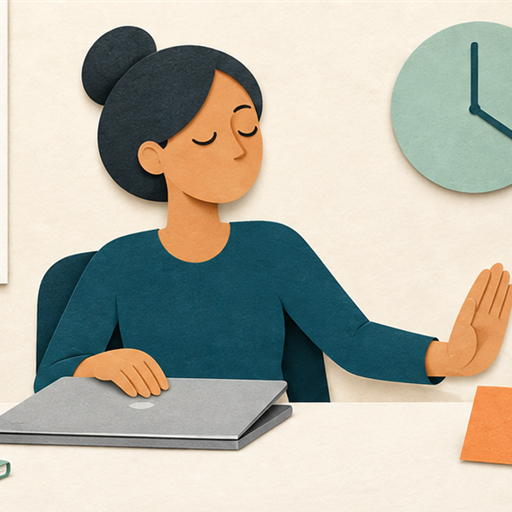
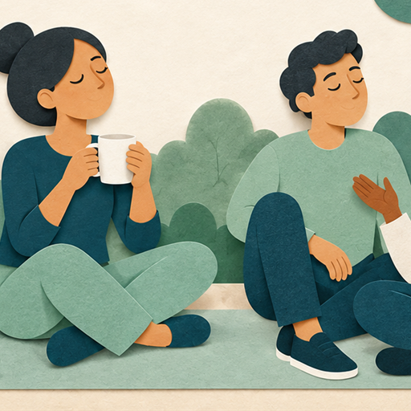

Recognize stress early
Burnout prevention includes boundaries, breaks, self-care, balance, and support networks.

Respond to stress
The sooner you learn to recognize your body’s signals, the sooner you can respond with a useful strategy, such as taking a walk, writing in a journal, practicing mindfulness, or asking for support.
Protect your capacity
Select a strategy to see more.
Set Boundaries
Boundaries are personal limits that communicate what is acceptable, appropriate, and comfortable. They help other people understand what you need and expect. Without clear boundaries, workload can become unmanageable. Examples include communicating work hours, protecting focus time, setting response expectations, and asking for clarity when a request conflicts with existing priorities.
Develop a Work-Life Balance
A healthy work-life balance supports the ability to manage work and personal responsibilities without sacrificing one completely for the other. Time outside of work can restore energy, support relationships, and improve motivation when you return to your responsibilities.
Prioritize Self-Care
Self-care means taking time to support physical health, mental health, and overall well-being. Self-care is individual; the important part is making it a real priority rather than an afterthought.
Sustain your energy
Select a strategy to see more.

Take Regular Breaks
Short breaks throughout the day can help you relax and recharge and may create space for mindfulness. Longer breaks, personal leave, or vacation can also help you return to responsibilities with a fresh perspective. Breaks are part of sustainable performance, not evidence that you are avoiding work.
Maintain a Support Network
A support network may include family members, friends, coworkers, supervisors, mentors, or other trusted people. Supportive people may not share the same experience, but they can offer understanding, encouragement, perspective, and practical help during challenging periods.